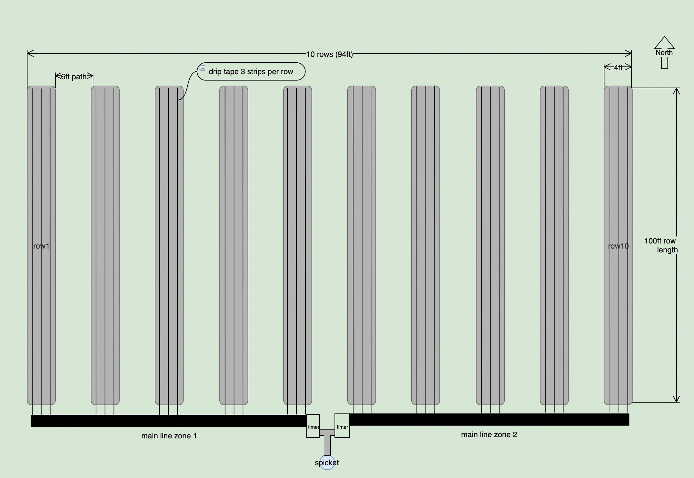
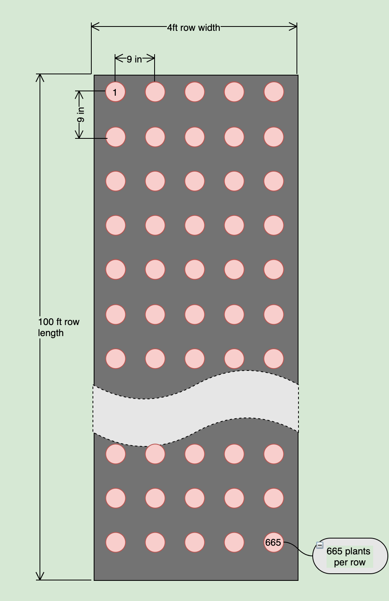

Spring 2020
Quick Facts:
- Fairborn, OH is in Zone 6a.
- On average, your frost-free growing season starts Apr 11 and ends Oct 30, totaling 202 days
- Spring 2020 in Northern Hemisphere will begin on Thursday, March 19
Flower Field Layout
Reference:

- Each bed is 4 feet by 100 feet
- 10 beds total (5 beds in each irrigation zone)
- 2 feet between each bed with 6 feet between each zone
- Landscape fabric is 6 feet wide. This is enough to cover the beds and overlap in between to allow ~2 feet for a walking path
- 3 drip tape irrigation lines per bed
- 2 irrigation zones, each zone has 15 drip tape lines
Spacing Plan
To compute the number of plants per bed; each bed is 48 inches (4 feet) wide and 1,200 inches (100 feet) long, as shown above, and by planting with 9-inch spacing, I can fit ~665 plants in each bed:
- Plants per width: 48in / 9in spacing = 5.3 plants; rounds down to 5 plants
- Plants per length: 1200in / 9in spacing = 133.3 plants; rounds down to 133 plants
- Plants per bed: 5 plants X 133 plants = 665 plants per bed
665 plants per bed, that's 6,650 plants for the entire field

Irrigation Setup
Flow
Knowing your flow rate is critical to sizing your system.
I did a flow test with the spigot out in the field. It took about 55 seconds to fill 5 gallon bucket. I used the following formula to compute gallons per hour (GPH). Or you can use the flow calculator from dripworks.com
55 gal 60 sec 60 min 18,000 gal
------ x ------ x ------ = ---------- ~= 327 GPH
55 sec 1 min 1 hr 55 hr
Flow Capacity: 327 GPH
Soil Type
Next we need to know our soil type:
- Clay - requires a 0.5 GPH emitter
- Loam - requires a 0.5-1 GPH emitter
- Sand - requires a 1-2 GPH emitter
In my case I am not sure, I will guess loam for now.
Loam - requires a 0.5-1 GPH emitter (let's go with 0.75 GPH)
Product Selection
According to the description Drip Tape sounds best for my situation:
Drip Tape is best for long, straight row crops. It is the most economical way to water your plants and is easy to install and maintain.
To start I am going to buy a kit. There seems to be two kits that could do the job:
If I only use two strips of drip tape per row then I could get the medium kit. However, the medium kit leaves no room for error and I feel like 9 inch spacing for the plants is denser than normal so I better go with at least three strips of drip tape per row. Given that I will get the large kit with an extra timer so I can automate two zones.
In this blog post Floret says they use four strips of drip tape per four foot bed but they have sandy soil and even say that you could get by with two or three strips if you don't have sandy soil, so that validates my choice.
I will be going with the drip tape row crop large kit
Zones
The drip tape that comes with the large kit uses drip tape part# TA1508L which is rated at Flow per 100 feet is 20 GPH. So that is 20 GPH for each strip of drip tape. I need 30 strips total for the field which would require 600 GPH (20 GPH X 30 strips), but my system can only generate 327 GPH. Therefore, if I split my field into two zone, 5 beds requiring 15 strips each, then each zone will only need 300 GPH (20 GPH X 15 strips) which is less than 327 GPH, so we are good.
two zones, each requiring 300 GPH (20 GPH X 15 strips)
Germination Station
Shelf Layout
The image below shows the layout for one shelf of the germination station. Each shelf will be able to hold 288 plants, four starter trays of 72 plants each.
288 plants per shelf

Station
Each station is a five shelf unit. The top shelf is used for storage and four shelves will be used for germination. Each station will be able to hold 1,152 plants, four shelves of 288 plants each.
1,152 plants per station
Beds Summary
- Main cutting beds
- Filler and Foliage
- Sunflower strip
- Pumpkin patch
Garden Planner
Main cutting beds, annuals with irrigation.
Spacing
| # | Plant | Propagation | Start | Between plants in row | Between rows | Rows per bed | Fabric | Irrigation |
|---|---|---|---|---|---|---|---|---|
| 1 | Dahlias | tuber | outside | 16 in | 16 in | 3 | yes | yes |
| 2 | Dahlia Mix | seed | inside | 12 in | 16 in | 3 | yes | yes |
| 3 | Ranunculus | corms | outside | 8 in | 10 in | 4 | no | yes |
| 4 | Anemone | corms | outside | 6 in | 10 in | 4 | no | yes |
| 5 | Cosmos | seed | inside | 9 in | 9 in | 5 | yes | yes |
| 6 | Larkspur | |||||||
| 7 | Zinnias | seed | inside | 9 in | 9 in | 5 | yes | yes |
| 8 | Black Eyed Susans | seed | inside | 9 in | 9 in | 5 | yes | yes |
| 9 | Snapdragon | seed | inside | 9 in | 9 in | 5 | yes | yes |
| 9 | Stocks | |||||||
| 10 | Celosia | |||||||
| 11 | Gormphrena | |||||||
| 12 | Marigold | |||||||
| 13 | Choc.Qn Anne's Lace | |||||||
| 14 | Sweet Pea |
Varieties
In this table if the number of plants is fixed then the bed-linear-feed will be computed in the Garden Planner app. However in most cases the bed-linear-feed is given and the number of plans is computed. Note a "plant" might require several seeds (or tubers or corms) if it is a "thinning" plant like the pumpkins or if you need to sow several seeds per plant.
| Plant | Variety | Row Group | Fixed | Derived | Sow per plant | Stock† | What to Buy (stock * 1.2) |
|---|---|---|---|---|---|---|---|
| Dahlias | Jan Ryecroft (Sm 4”) | 6A | 5 tubers | 9 LBF | 1 tuber | 5 tubers | 5 tubers |
| Lady Natalie (Sm 4”) | 6A | 5 tubers | 9 LBF | 1 tuber | 5 tubers | 5 tubers | |
| Golden Scepter (Sm 2”) | 6A | 5 tubers | 9 LBF | 1 tuber | 5 tubers | 5 tubers | |
| Black Satin (Sm 2-4”) | 6B | 5 tubers | 9 LBF | 1 tuber | 5 tubers | 5 tubers | |
| Cornel (Sm 4”) | 6B | 5 tubers | 9 LBF | 1 tuber | 5 tubers | 5 tubers | |
| Dorothy (Sm) | 6B | 5 tubers | 9 LBF | 1 tuber | 5 tubers | 5 tubers | |
| Franz Kafka (Sm 2-3”) | 6C | 7 tubers | 8 LBF | 1 tuber | 7 tubers | 7 tubers | |
| Wizard of Oz (Sm 3”) | 6C | 3 tubers | 8 LBF | 1 tuber | 3 tubers | 3 tubers | |
| Peaches n Cream (Med 4-6“) | 6D | 8 tubers | 12.5 LBF | 1 tuber | 8 tubers | 8 tubers | |
| Conn.Coral (Med) | 6D | 8 tubers | 12.5 LBF | 1 tuber | 8 tubers | 8 tubers | |
| Mystique (Med 4-6“) | 6D | 8 tubers | 12.5 LBF | 1 tuber | 8 tubers | 8 tubers | |
| BoomBoom White (Med 6”) | 6E | 5 tubers | 9 LBF | 1 tuber | 5 tubers | 5 tubers | |
| Sweet Nathalie (Med. 5”) | 6E | 5 tubers | 9 LBF | 1 tuber | 5 tubers | 5 tubers | |
| Lancresse (Med 4-6“) | 6E | 5 tubers | 9 LBF | 1 tuber | 5 tubers | 5 tubers | |
| Thomas Edison (Med 6”) | 6F | 5 tubers | 9 LBF | 1 tuber | 5 tubers | 5 tubers | |
| Shiloh Noelle (XL 10”) | 6F | 5 tubers | 9 LBF | 1 tuber | 5 tubers | 5 tubers | |
| Hamari Gold (XL 10”) | 6F | 5 tubers | 9 LBF | 1 tuber | 5 tubers | 5 tubers | |
| Penhill Watermelon (XL 10”) | 6G | 8 tubers | 12 LBF | 1 tuber | 8 tubers | 8 tubers | |
| Otto’s Thrill (XL) | 6G | 8 tubers | 12 LBF | 1 tuber | 8 tubers | 8 tubers | |
| Café Au Lait (XL) | 6G | 8 tubers | 12 LBF | 1 tuber | 8 tubers | 8 tubers | |
| Mix (seed) | 6H | 30 LBF | 90 plants | 2 seeds | 180 seeds | 216 seeds | |
| Cosmos | Versailles Mix | 7A | 6 LBF | 40 plants | 1 seed | 40 seeds | 48 seeds |
| Dbl-Click SnowPuff | 7B | 6 LBF | 40 plants | 1 seed | 40 seeds | 48 seeds | |
| Dbl-Click Mix | 7C | 6 LBF | 40 plants | 1 seed | 40 seeds | 48 seeds | |
| Rubenza | 7D | 6 LBF | 40 plants | 1 seed | 40 seeds | 48 seeds | |
| Sea Shells | 7E | 6 LBF | 40 plants | 1 seed | 40 seeds | 48 seeds | |
| Zinnias | Jazzy Mix | 7F | 6.5 LBF | 45 plants | 6 seeds | 270 seeds | 324 seeds |
| Oklahoma White | 7G | 6.5 LBF | 45 plants | 6 seeds | 270 seeds | 324 seeds | |
| Queen Red Lime | 7H | 6.5 LBF | 45 plants | 6 seeds | 270 seeds | 324 seeds | |
| Giant Mix | 7I | 6.5 LBF | 45 plants | 6 seeds | 270 seeds | 324 seeds | |
| Giant Salmon Rose | 7J | 6.5 LBF | 45 plants | 6 seeds | 270 seeds | 324 seeds | |
| Uproar Rose | 7K | 6.5 LBF | 45 plants | 6 seeds | 270 seeds | 324 seeds | |
| Snapdragons | Potomac Custom Mix | 8A | 10 LBF | 65 plants | 1 seed | 65 seeds | 78 seeds |
| Rocket Mix | 8B | 10 LBF | 65 plants | 1 seed | 65 seeds | 78 seeds | |
| Costa Silver | 8C | 10 LBF | 65 plants | 1 seed | 65 seeds | 78 seeds | |
| Madame Butterfly Mix | 8D | 10 LBF | 65 plants | 1 seed | 65 seeds | 78 seeds | |
| Costa Mix | 8E | 10 LBF | 65 plants | 1 seed | 65 seeds | 78 seeds | |
| Black-Eyed Susans | Triloba | 8F | 12.5 LBF | 85 plants | 1 seed | 85 seeds | 102 seets |
| (Cornflower) | Hirta Cherokee Sunset Mix | 8G | 12.5 LBF | 85 plants | 1 seed | 85 seeds | 102 seets |
| Hirta Indian Summer | 8H | 12.5 LBF | 85 plants | 1 seed | 85 seeds | 102 seets | |
| Hirta Cherry Brandy | 9I | 12.5 LBF | 85 plants | 1 seed | 85 seeds | 102 seets |
- † Stock is exactly what is needed gut when growing from seed, always order 20 percent more. The
What to Buyhas 20% added to stock in some caseslbf- linear bed feed. The number of plants in a LBF depends on spacing, for example with a 9in x 9in, 6 LBF will hold about 40 plants.
Filler and Foliage
Floret said 50% Foliage and filler
Filler
| # | Plant | ||
|---|---|---|---|
| 1 | Baby's Breath (Gypsophila) | ||
| 2 | Bishops Flower | ||
| 3 | Love-in-a-Mist |
Foliage
| # | Plant | ||
|---|---|---|---|
| 1 | Dusty Miller | perennials but grown as annual | |
| 2 | Scented Geranium | ||
| 3 | Grasses-Panicum | "frosted explosion" | |
| 4 | Eucalyptus | "silver drop", "seeded" |
Sunflowers
Sunflower beds, no irrigation
| # | Variety | ||
|---|---|---|---|
| 1 | Single bloom | ||
| 2 | Blush |
Pumpkin Patch
Pumpkin Patch, no irrigation
| # | Variety | Size | Days to Maturity | Vine Length | Between plants in row | Between rows | Grow | Link |
|---|---|---|---|---|---|---|---|---|
| 1 | PipSqueak | Small | 100 | Medium | 33 in | 8 ft | † | JS |
| 2 | Racer Treated | Medium | 85 | Short | 33 in | 6 ft | † | JS |
| 3 | Howden | Large | 115 | Long | 60 in | 12 ft | † | JS |
| 4 | Casperita | Mini | 77 | Medium | 18 in | 10 ft | † | JS |
| 5 | Flat Stacker | Medium | 95 | Long | 42 in | 12 ft | † | JS |
| 6 | Ornamental Mix | Gourd | 95 | Medium | 60 in | 8 ft | † | JS |
† - For direct seeding, sow 2 seeds per spacing, 1/2-1" deep. Thin to 1 plant per spacing after seedlings are established
Pumpkin Field